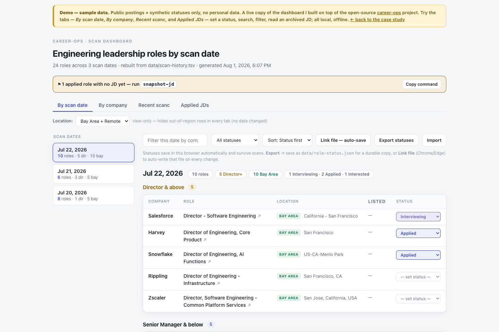

Case study · AI-assisted engineering
I directed Claude Code to turn my own job search into a running, instrumented system — built on an open-source tool I don't own. The interesting part isn't what the AI generated; it's the five moments I overrode the easy, wrong path to keep it production-grade: upgrade-safe, honest, least-privilege, and zero-cost.

The foundation is career-ops (MIT, © Santiago Fernández de Valderrama) — a multi-agent job-search system I did not write. Everything here is my extension on top of it, built by directing Claude Code and living entirely in the project's own user-extension layer. No base-project code is claimed as mine.
Anyone can prompt an AI to generate a dashboard. The question a hiring panel is really asking in 2026 is: when the model writes the code, what do you add? My answer is the judgment that turns a generated script into a system you can trust and keep running — expressed as three things at once:
Each feature is really a moment where the obvious implementation was the wrong one. These are the overrides.
100% of my code lives in the project's gitignored user-layer that its updater's USER_PATHS guard refuses to touch — with zero imports from system code. It rode upstream auto-updates v1.19 → v1.22 untouched. That's building on a platform you don't own, on purpose.
A real target role never surfaced. I traced it to a substring title matcher that can't match multi-word disciplines like “AI Enablement”, and fixed the whole class in config — not a one-off keyword, and never by editing system code. The dangerous bug is the false-negative you don't see.
Job posts expire and take their description with them — one I'd tracked 404'd, gone from the API and the web archive. I built an incremental JD archiver (multi-provider APIs + a headless-browser fallback for gated boards). When a post is truly dead it writes an honest stub, never an invented description you'd prep against.
A static file:// page can't write to disk. I used the File System Access API (with a persisted handle) so status edits save straight to disk — no server — and gate every rebuild on a self-check that compiles the embedded JS and refuses to ship a broken dashboard.
Discovery is zero-LLM-token by design — structured ATS APIs, not model calls — so a single scan reads 31,450 jobs at $0. Email access is read-only scope with no stored secret; the tool never auto-submits an application; and personal data (statuses, saved JDs) stays local and gitignored. There's no corner I cut on safety, by construction.
The demo runs on a sanitized public sample (public postings + synthetic statuses, no personal data). The real build runs against my live scans.